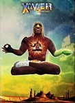

Xavier: Renegade Angel

Stephen Klancher: SEEN
Stephen Klancher: January 12, 2008
Stephen Klancher: January 13, 2008
Stephen Klancher: January 17, 2008
Stephen Klancher: January 17, 2008

Stephen Klancher: May 6, 2009
Stephen Klancher: May 6, 2009
Stephen Klancher: May 6, 2009
Whoa, this is one of the ones I like that rises above dumb innuendo. His memory got recursively more hazy! He changed the past be remembering himself talking to his younger self. He needed fabric to dress up like a ghost so he just used the FABRIC OF TIME! Out to the most hazy recursion of memory he was the messiah of the monsters of his childhood drawings...
I love these mind trip episodes.
I love these mind trip episodes.
Stephen Klancher: May 8, 2009
Stephen Klancher: May 31, 2009
That was weird-fucked-up. The Americas covered in gold pretending to be robots being converted into Muslims were rebelling against the Arabs with anti-aging lotion which reverted them to Arabasauruses which, when killed, turned to oil. Then the Ameribots got rich from the oil, bought the network (meta-story), sold it to the Arabs at a profit, and the final moments of the episode were the Arabic version of Xavier. Also Xavier found his mom.
Stephen Klancher: May 31, 2009
Was that stuff really viewer submitted? That ranks pretty high on fucked up things I've seen. If you took an older, more conservative person and forced them to watch this, it might break their mind. Of course I'm thinking drugged and Clockwork Orange style, but still.